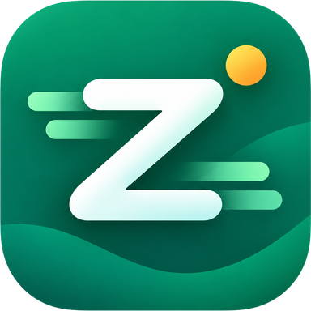

Redes
Elegí qué red ver. Cada una guarda sus alertas por separado y tiene su propio acceso.
Los accesos quedan guardados en este navegador. Cada empresa ve este navegador en Administración → Navegadores y le puede quitar el acceso.

Zonda Panel de redesElegí qué red ver. Cada una guarda sus alertas por separado y tiene su propio acceso.
Los accesos quedan guardados en este navegador. Cada empresa ve este navegador en Administración → Navegadores y le puede quitar el acceso.